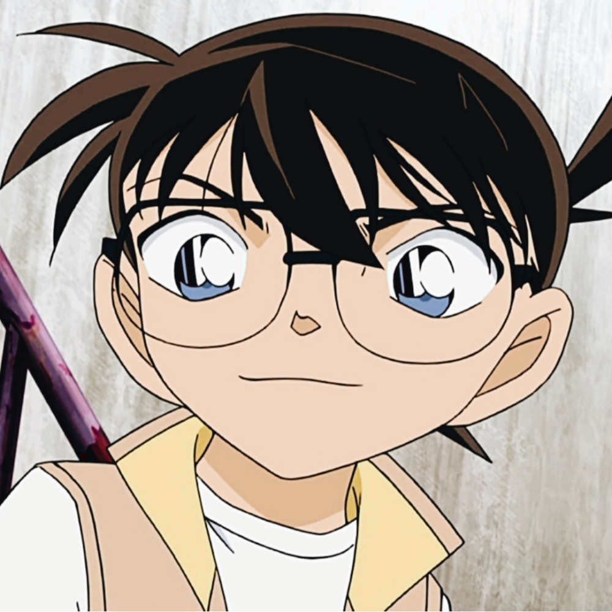
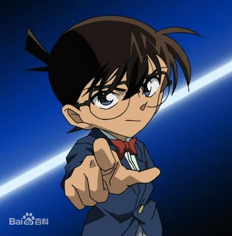

- 人物生平
- 角色背景
- 常用道具
- 人物图片
- 角色评价
江户川柯南
江户川柯南，日本漫画《名侦探柯南》及其衍生作品中的男主角。真实身份是高中生侦探工藤新一，人称“平成年代的福尔摩斯”“日本警察的救世主”。因试图跟踪黑衣组织成员被偷袭，并被灌下代号“APTX4869”的毒药，虽然幸免于死，但身体缩小成一年级小学生的模样。之后寻求阿笠博士的帮助，在被青梅竹马毛利兰询问自己名字时，化名为江户川柯南。在阿笠博士的提议下，寄住于小兰的父亲毛利小五郎家中，解决各种案件的同时秘密调查黑衣组织。
角色背景
真实身份是高中生侦探工藤新一。17岁，因服下毒药身体变小后外表约7岁 。生日是5月4日（来源于1891年5月4日福尔摩斯和莫里亚蒂教授坠入莱辛巴赫瀑布的日期） 。原来住在东京都米花町2丁目21番地（来源于福尔摩斯的住址贝克街221B 注：“贝克”和“米花”的日文发音相同，都为“Beika”）。变小后的工藤新一被毛利兰询问姓名，他情急之下受到《福尔摩斯探案集》的作者“阿瑟·柯南·道尔”和日本侦探小说作家“江户川乱步”名字的启发，为自己取名为“江户川柯南”。 现住在毛利侦探事务所，地址为东京都米花町5丁目39番地1号 。他在帝丹小学1年B班就读 。
角色生活
新一喜爱足球、热爱推理，经常熬夜看推理小说，他习惯边踢足球边思考问题，在推理时也经常做出福尔摩斯的经典思考动作——用右手的食指和大拇指托住下颌，他的推理、足球水平一流，其他运动也很在行。 他有着极其广阔的知识面，在校成绩一直为满分。他还擅长滑雪、滑冰、射击、驾驶（包括汽车、飞机、直升机、快艇）、拆弹、拉小提琴、多种外语、电脑、游泳、国际象棋、麻将、盲文等。他还拥有绝对音感。
常用道具
- 脚力增强鞋
- 侦探徽章
- 便当型传真机
- 领结型变声器
- 袖扣型窃听器
- 手表型麻醉枪
人物图片


角色评价
- 青山刚昌
身体虽然变小，思维却是大人。
- 安室透
可怕的男人。
- 怪盗基德
你不是普通的小朋友。